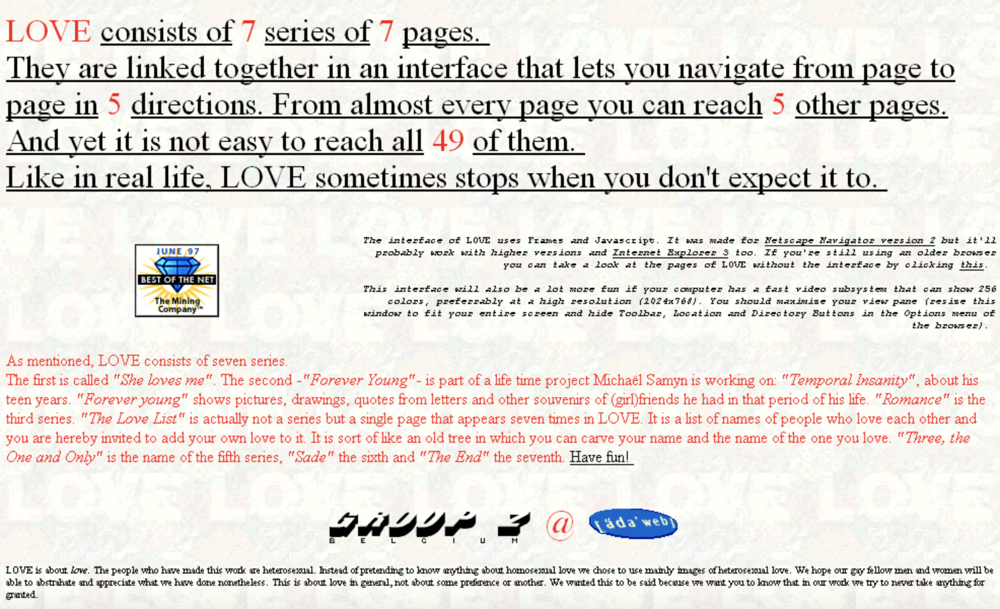
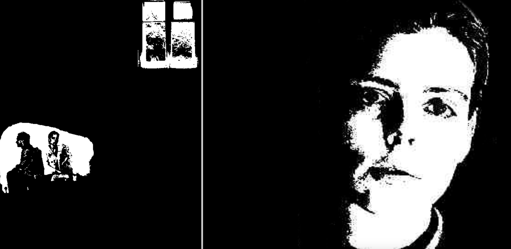
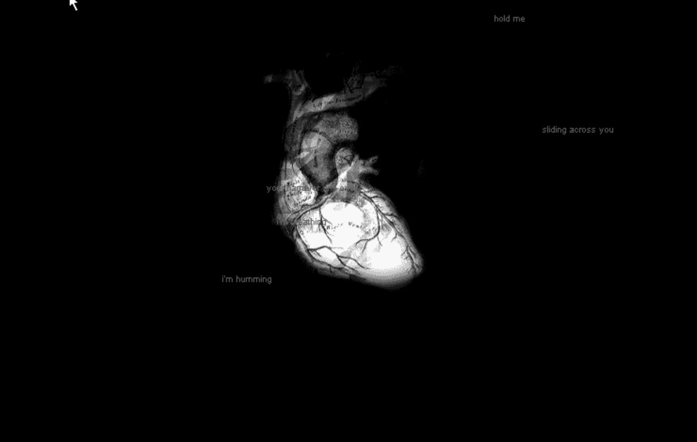

Exhibition curated by Sophia Khodorkovsky
The works in this exhibition will explore love and intimacy through the digital lens, reflecting on how the internet has reshaped human connections since the beginning of its development. “LOVE”, from GROUP Z in 1995, used an early Internet browsing aesthetic as a means of interactive exploration of affection through text. "My boyfriend came back from the war" by Olia Lialina from 1996 is representative of the emotional binds one could have with the early web aesthetic developments, showing the struggle of absence and reunion through digital space. In “SKINONSKINONSKIN”, 1999, by ENTROPY8ZUPER! boundaries are broken between physical and digital love through imagery and text. These works together look at the intersection of relationships, technology, and narrative in a rapidly changing digital landscape and offer reflections on the evolution of desire and connection in the digital age.
Artist: Group Z
This piece uses early internet aesthetics to create an interactive exploration of the stages of love. Through a combination of text and images, users navigate through different phases of affection, making the digital space a fun and reflective space for exploring human connection. The work captures the early experimental potential of the internet as a place for personal and emotional engagement.
Artist: Olia Lialina
This piece captures the emotional complexity of long-distance love and the impact of separation due to war. Through a web page structure that simulates the emotional experience of waiting and reunion, Lialina uses the internet's early aesthetic to underscore the distance between lovers and the rawness of digital communication in the face of longing and reunion.
Artists: Auriea Harvey & Michaël Samyn
A collaboration between artists Auriea Harvey and Michaël Samyn, this work uses text, audio, and images to tell a live, evolving love story between the two artists. The piece plays with the boundaries between the physical and the digital, offering an intimate and experimental portrayal of digital love. Through this project, ENTROPY8ZUPER! explores the fusion of emotional expression and technology, offering a deeply personal reflection on how love can be highlighted through digital means.